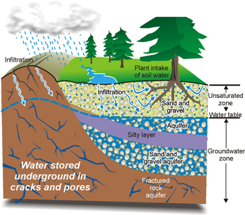

Site Planning
Understanding Site Hydrology

Introduction
Site hydrology plays a vital role in evaluating the environmental conditions of a project site. It focuses on how water moves through and interacts with the landscape — whether through rainfall, groundwater movement, or surface runoff. A solid understanding of these dynamics supports the design of effective drainage systems, informed water‑management strategies, and measures that reduce flooding risks.
Key Components of Site Hydrology
Key components of site hydrology include:
- Precipitation: The volume, timing, and distribution of rainfall, which influence soil moisture levels and the movement of water across and within the site.
- Groundwater: Subsurface water that affects water table elevations, soil stability, and foundation design considerations.
- Surface Runoff: Water flowing over the land surface, which must be managed through appropriate drainage solutions to minimize erosion and prevent flooding.
- Hydrologic Processes: The ongoing cycle of infiltration, evaporation, and runoff that sustains ecosystems and supports plant and animal life.
Hydrology plays a central role in managing water resources and protecting the environment. Its applications span a wide range of fields and scales, helping guide decisions from small residential landscapes to major municipal developments. Key uses include:
- Irrigation Planning and Agricultural Water Management: Ensuring crops receive adequate water while preventing over‑irrigation and soil degradation.
- Flood Prevention and Erosion Control: Analyzing runoff patterns to design systems that reduce flooding risks and minimize soil loss.
- Wastewater Treatment and Pollution Control: Understanding water movement to prevent contamination and support effective treatment processes.
- Hydropower and Hydraulic Structure Design: Informing the design of dams, spillways, and other structures that rely on predictable water flow.
- Environmental Conservation: Supporting the protection and restoration of wetlands, fisheries, and wildlife habitats by understanding natural hydrologic cycles.
- Urban Planning and Sustainable Water Supply: Guiding stormwater management, groundwater recharge, and long‑term water availability in growing communities.
Key Takeaways
Hydrologic knowledge is valuable at every scale — from identifying areas of standing water in a homeowner's yard to planning drainage networks for entire cities. By applying hydrologic principles, planners and engineers can create safer, more resilient, and environmentally responsible spaces.